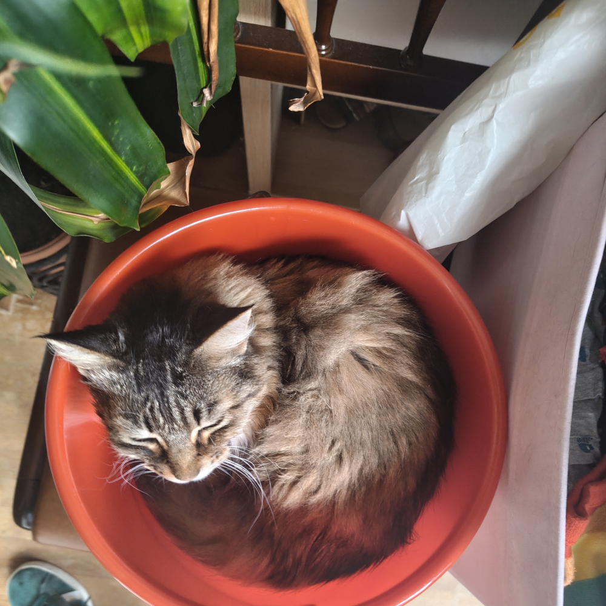

Calcetines (gato)
Tengo un gato que se llama calcetines, tiene 15 años
Es un gato bastante cariñoso, pero por desgracia tiene hipotiroidismo, lo cual le cansa un montón de problemas, entre los cuales se encuentran: tensión alta, un soplo en el corazón, deregulation del hambre...
Fotos de Calcetines
